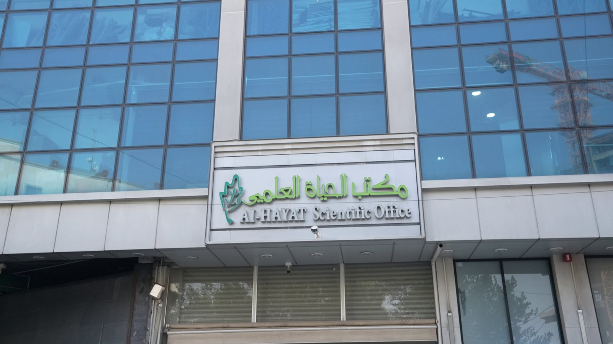
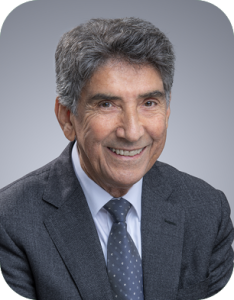

Private sales
Our story
From scientific office to integrated national partner
Since 1996, we have built the regulatory, operational and commercial capabilities that connect global pharmaceutical companies with millions of patients across Iraq.
Who we are
Deep local expertise with an ambition beyond distribution
Al Hayat Scientific Office is one of Iraq's most experienced and trusted pharmaceutical agencies. We represent leading manufacturers and ensure consistent access to high-quality products through deep regulatory understanding and advanced distribution logistics.
More than 525 professionals work from Baghdad, Erbil and Basra, growing from the 300+ professionals recorded in the earlier profile.
MissionImprove quality of life
High-quality medicines, evolved health policy and international standards.
VisionDevelop healthcare
Education, digital transformation and patient-centred innovation.

Our scale today
National infrastructure managed to global standards10,000+Monthly orders
5,835+Clients
525+Dedicated employees
148+Registered products
Organisation structure
Thirteen integrated functions reporting to the General Manager
Tender management
Quality assurance & safety
Human resources
Logistics & supply chain
IT & data protection
Accounting & finance
Audit
Transportation
Warehouse management
Regulatory affairs
Marketing
Pharmacovigilance

A message from our founder & CEO
“Our mission is to facilitate the connection between Iraqi healthcare and the latest advancements in global medicine. The tangible impact of these innovations is the daily motivation behind our work.”
A message from our GM
“We combine trusted expertise with a deep commitment to patient wellbeing, ensuring life-saving treatments are accessible, effective and delivered with integrity.”
Why Al Hayat?
Stability, transparency and long-term commitment
More than 30 years of experience, sustainable operations, a skilled team and a family-oriented culture, with continued investment even through periods of crisis.
Financial stability and transparency with internal and external audit
Compliance with Central Bank of Iraq requirements
Advanced cash-flow and operating-efficiency systems
Our milestones
Foundations built across three decades
Foundation
Established with a focus on Ministry of Health tenders.
Private-sector expansion
Strategic diversification into private healthcare and retail pharmacy networks.
Kurdistan operations
Omnia Kurdistan established with a direct retail licence and regional presence.
Southern expansion
Basra hub launched, completing the strategic triangle of distribution centres.
Nationwide coverage
Planned expansion to Mosul, Kirkuk and Karbala for complete national reach.
The champs of Al Hayat
A field force powered by technology
Ninety field representatives and ten supervisors drive market execution, supported by integrated CRM and ERP systems and data-driven insight.
Electronic stock, order, returns and collection management
Field engagement and continuous customer follow-up
Market intelligence and data-supported decisions